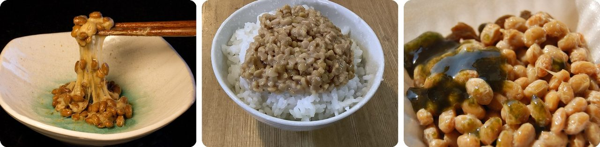

🌍 Top 10 Weirdest Hotel Breakfasts
Nov 26, 2026
1. 🇺🇸 Eggs Benedict may have started as a hangover order
 In 1942, a retired Wall Street stockbroker named Lemuel Benedict told The New Yorker how a famous breakfast was born. In 1894, he said, he wandered into New York's Waldorf Hotel hoping to cure a morning hangover.
In 1942, a retired Wall Street stockbroker named Lemuel Benedict told The New Yorker how a famous breakfast was born. In 1894, he said, he wandered into New York's Waldorf Hotel hoping to cure a morning hangover.
He ordered buttered toast, poached eggs, crispy bacon and a side of hollandaise, a rich sauce made of eggs, lemon and melted butter. The hotel's head waiter, Oscar Tschirky, liked it so much that he put it on the breakfast and lunch menus. He just swapped the bacon for ham and the toast for an English muffin.
It's not the only story. The restaurant Delmonico's says it made the dish first, back in 1860.
Basically, a classic American breakfast may have started as a cure for feeling awful.
2. 🏴 A London hotel invented a fish omelette for a novelist
 The writer Arnold Bennett ate so often at the Savoy Grill, inside London's Savoy Hotel, that the chef, Jean Baptiste Virlogeux, created an omelette just for him.
The writer Arnold Bennett ate so often at the Savoy Grill, inside London's Savoy Hotel, that the chef, Jean Baptiste Virlogeux, created an omelette just for him.
It's not a normal omelette. It's filled with smoked haddock, a smoky fish, plus Cheddar cheese and cream. It's still a British classic, and a version is still on the Savoy Grill's menu.
Bennett loved the hotel so much that he studied how it ran and wrote a whole novel about a hotel like it, Imperial Palace, in 1930.
Think of it as a fan who got his own dish named after him.
3. 🇮🇱 Israeli hotels tried to cancel their giant breakfast, and failed
 The Israeli breakfast started on kibbutzim, farms where people lived and worked together. Workers ate a light snack early, went out to the fields for a few hours, then came back to a huge buffet in the shared dining hall.
The Israeli breakfast started on kibbutzim, farms where people lived and worked together. Workers ate a light snack early, went out to the fields for a few hours, then came back to a huge buffet in the shared dining hall.
By the 1950s, hotels were copying it: salads, cheeses, eggs, fish like herring, breads and pastries. There's almost never any meat, because Jewish food laws say meat and dairy aren't eaten in the same meal.
In 1979, hotel owners decided to swap it for a smaller breakfast to save money. One reason they gave: tourists kept grabbing extra breakfast food to save for later meals. The plan didn't work, and the big buffet came back.
In other words, the breakfast was so good that guests saved it for later.
4. 🛎️ The continental breakfast was invented by hotels, not by Europe
 "Continental" means mainland Europe, but this breakfast was made by the hotel business in English-speaking countries. The name first showed up in America in 1896, in a New York book about public health.
"Continental" means mainland Europe, but this breakfast was made by the hotel business in English-speaking countries. The name first showed up in America in 1896, in a New York book about public health.
The foods weren't picked for taste. They were picked because they keep well without a fridge and are easy to serve to big groups: bread, muffins, pastries, fruit, cereal, and little packets of butter and jam.
That's also why cheaper hotels love it. It needs fewer workers to make and serve than a cooked breakfast.
Basically, it's a breakfast designed to survive sitting out all morning.
5. 🥞 Some hotels let guests run their own pancake machine
 The first known pancake machine was invented in Portland, Oregon, in 1928. Puffs of air pushed batter onto a spinning hot grill, a little shelf flipped each pancake halfway through cooking, and a gate knocked the finished pancake out.
The first known pancake machine was invented in Portland, Oregon, in 1928. Puffs of air pushed batter onto a spinning hot grill, a little shelf flipped each pancake halfway through cooking, and a gate knocked the finished pancake out.
Today, some hotels have pancake machines that guests are allowed to run themselves, and they show up in fancy airport lounges too.
People have also built their own. In 1977, a club in Ocala, Florida, made one that needed four people to run, and it cooked 750 to 1,000 pancakes an hour, more than 12 every minute.
A robot short-order cook in the breakfast room.
6. 🇯🇵 Japan's stringy natto may have started as horse food

Natto is soybeans fermented by a helpful bacteria. It's often eaten for breakfast with rice. In Japan, traditional inns called ryokan serve a full traditional breakfast, and Western-style hotels usually offer a mix of Japanese and Western food.Natto smells a bit like strong, old cheese. When you stir it, it makes lots of sticky strings, like melted cheese that won't let go.
One legend says it began with a samurai's soldiers. They were boiling soybeans for their horses when they got attacked, so they stuffed the beans into straw bags. A few days later, the beans had fermented, and the soldiers ate them anyway and liked them.
Think of it as an accident that turned into breakfast.
7. 🇨🇳 Century eggs aren't 100 years old, just very changed
 Century eggs, pídàn (皮蛋) in Chinese, are duck, chicken or quail eggs wrapped in a mix of clay, ash, salt, lime and rice hulls. They sit for weeks to months, not a century.
Century eggs, pídàn (皮蛋) in Chinese, are duck, chicken or quail eggs wrapped in a mix of clay, ash, salt, lime and rice hulls. They sit for weeks to months, not a century.
The mix slowly turns the egg into something new. The yolk becomes dark greenish-grey and creamy, and the white turns into see-through brown jelly. The best ones have patterns like pine branches on the white.
In Thailand and Laos, their name means "horse urine egg," but they are not made with horse pee. That's just a myth, maybe because of their strong smell. Some Chinese families cut them up and cook them into century egg and lean pork congee, a rice porridge called pídàn shòuròu zhōu (皮蛋瘦肉粥).
In other words, it's an egg that got a total makeover in a mud bath.
8. 🇸🇪 Swedes squeeze fish eggs out of a tube for breakfast
 A typical Swedish breakfast is an open sandwich, and one favorite topping is smörgåskaviar, a sandwich spread made from fish eggs. A classic brand is Kalles, made from smoked, sugared and salted cod roe (fish eggs).
A typical Swedish breakfast is an open sandwich, and one favorite topping is smörgåskaviar, a sandwich spread made from fish eggs. A classic brand is Kalles, made from smoked, sugared and salted cod roe (fish eggs).
It comes in a metal tube, like toothpaste. That's on purpose: plastic tubes suck air back in when you squeeze them, and air makes the spread go bad. A metal tube just stays squished.
The boy on the tube since 1954 is the boss's son, Carl, nicknamed Kalle. In 2011, IKEA swapped Kalles for its own brand, people got upset, and within a few years it was back on the shelves.
It's toothpaste for your sandwich.
9. 🇳🇱 The Dutch put chocolate "hail" on bread
 Hagelslag means "hailstorm." It's tiny chocolate sprinkles that the Dutch shake onto buttered bread for breakfast or lunch. In Belgium, people jokingly call them muizenstrontjes, "mouse droppings."
Hagelslag means "hailstorm." It's tiny chocolate sprinkles that the Dutch shake onto buttered bread for breakfast or lunch. In Belgium, people jokingly call them muizenstrontjes, "mouse droppings."
The Netherlands eats about 750,000 hagelslag sandwiches a day. Over a year, that's more than 14 million kilograms of sprinkles, heavier than 2,000 elephants.
The biggest maker, Venz, has been making chocolate hagelslag since 1936. There are dark, milk and white chocolate kinds, and even fruit flavors.
So in the Netherlands, eating sprinkles at breakfast is totally normal.
10. 🇬🇧 People throw black pudding in a contest
 Black pudding is a sausage made from pork blood, fat and oats or barley. It's part of a full English breakfast, alongside bacon, sausages, eggs, beans and toast.
Black pudding is a sausage made from pork blood, fat and oats or barley. It's part of a full English breakfast, alongside bacon, sausages, eggs, beans and toast.
Not everyone's a fan. In a 2017 poll about the perfect full English breakfast, it was the least popular of the traditional items, chosen only 35% of the time.
But some people really love it. In Ramsbottom, near Manchester, the World Black Pudding Throwing Championships have been held every year since the 1980s. People throw black puddings at piles of Yorkshire puddings, a joke about the old rivalry between Lancashire and Yorkshire.
So it's a breakfast you can also use as a ball.
Fun fact
Arnold Bennett wasn't the only famous person to get a dish at the Savoy. In 1893, the hotel's chef, Auguste Escoffier, invented peach Melba, a dessert named after the Australian singer Nellie Melba. Bennett, Melba and the composer Rossini all share the honor of having well-known dishes named after them. Foods named after real people, from sandwiches to pizzas, could be a delicious theme to explore next.
Photo credits (Wikimedia Commons)
- #1: Traditional Eggs Benedict.jpg by Mark Miller, CC BY-SA 4.0
- #1: Dancing at the Waldorf Astoria.jpg by Henry James Soulen, Public domain
- #1: Classic Eggs Benedict (flickr) by thebittenword.com, CC BY 2.0
- #2: Entrance to the Savoy Hotel, London - geograph.org.uk - 2281522.jpg by Anthony O'Neil, CC BY-SA 2.0
- #2: Omelette 1.jpg by Gaurav Dhwaj Khadka, CC BY-SA 4.0
- #2: Savoy Hotel Foyer - geograph.org.uk - 4519342.jpg by Anthony O'Neil, CC BY-SA 2.0
- #3: Israeli breakfast (flickr) by TeamRakbo, Public domain
- #3: Liat Portal for Foodie Disorder - Israeli breakfast in Tel Aviv.jpg by HaJunkiyada, CC BY-SA 4.0
- #3: Israeli breakfast (flickr) by Londo Mollari, CC BY-SA 2.0
- #4: Continental Breakfast.jpg by William J Sisti, CC BY-SA 2.0
- #4: Continental Breakfast (5618024251).jpg by Matt @ PEK from Taipei, Taiwan, CC BY-SA 2.0
- #4: Elizabeth Okie Paxton, Continental Breakfast.jpg by Elizabeth Okie Paxton, Public domain
- #5: Breakfast Pancake machine in Hotel. NICE. (flickr) by GoodNCrazy, CC BY 2.0
- #5: Pancake Machine (flickr) by reivax, CC BY-SA 2.0
- #5: Pancake machine (flickr) by WordRidden, CC BY 2.0
- #6: Natto mixed by Kinchan1.jpg by Kinchan1, CC BY 2.0
- #6: Rice seasoned with Natto.jpg by Qbwr8296, CC BY-SA 4.0
- #6: Natto (flickr) by snowpea&bokchoi, CC BY 2.0
- #7: Century egg porridge with pork by gigijin at Salvo Hotel Shanghai.jpg by gigijin from Salvo Hotel Shanghai, CC BY-SA 2.0
- #7: Century eggs with pickle ginger.jpg by Takeaway, CC BY-SA 3.0
- #7: A century eggs and Pork Congee from Chi Kee Congee Shop.jpg by Peachyeung316, CC BY-SA 4.0
- #8: Kalles Kaviar (cropped).jpg by Petey21, Public domain
- #8: KALLES kaviar (flickr) by kobakou, CC BY 2.0
- #8: Kalles Kaviar and eggs (flickr) by lovelihood, CC BY-SA 2.0
- #9: Hagelslag, a childrens favourite (flickr) by Ronald van der Graaf, CC BY 2.0
- #9: Hagelslag.jpg by No machine-readable author provided. DennisM assumed (based on copyright claims)., Public domain
- #9: Hagelslag chocolate sprinkles.jpg by Amin, CC BY-SA 4.0
- #10: Black Pudding - Classic English Breakfast - Jones the Grocer, Chadstone AUD13 (flickr) by avlxyz, CC BY-SA 2.0
- #10: Stornoway Black Pudding.jpg by Alexbrn, CC BY-SA 3.0
- #10: Irish black and white pudding slices.JPG by O'Dea, CC BY-SA 4.0


.jpg){kind=link}


.jpg){kind=link}